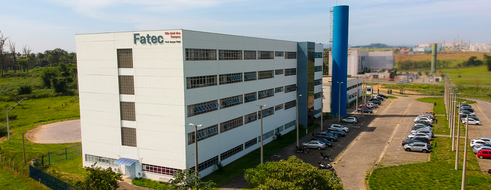

Parque Tecnológico
O Parque Tecnológico São José dos Campos foi instituído pelo Decreto Municipal nº 12.367/2006
Saiba +
Prof. Jessen Vidal
Jessen Vidal (1930-2007) foi um engenheiro mecânico e professor universitário, e sua contribuição para a educação técnica e tecnológica em São José dos Campos é reconhecida pela atribuição de seu nome à Fatec local.
Saiba +
Cesare Lattes
Cesar Lattes (1924-2005) foi um cientista brasileiro. Estudou física e matemática na Universidade de São Paulo. Com 19 anos era assistente da cadeira de Física Teórica.
Saiba +